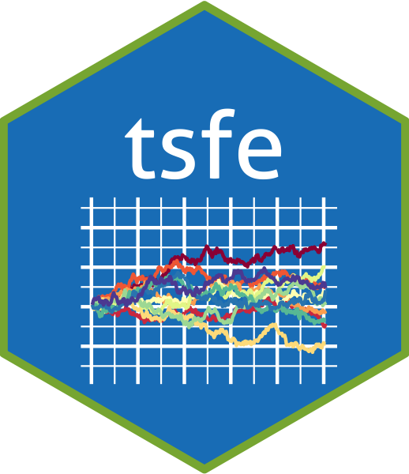

Appendix A — resources
A.1 The TSFE R package


This package contains templates for reports, and functions and workshops using in Time series financial econometrics taught by Barry Quinn at Queen’s Management School.
A.1.1 Installation
remotes::install_github("quinfer/tsfe")And the development version from GitHub with:
# install.packages("devtools")
devtools::install_github("quinfer/tsfe")A.2 Example
This is a basic example which shows you how to solve a common problem:
library(tsfe)
## basic example code
data("ftse350") # This is a 2MB file so might take some time to initially load
summary(ftse350)
#> Name ticker variable date
#> Length:1014400 Length:1014400 Length:1014400 Min. :2016-04-29
#> Class :character Class :character Class :character 1st Qu.:2017-06-14
#> Mode :character Mode :character Mode :character Median :2018-07-20
#> Mean :2018-07-13
#> 3rd Qu.:2019-08-14
#> Max. :2020-09-01
#> value
#> Min. : 1.05
#> 1st Qu.: 373.10
#> Median : 893.92
#> Mean : 3273.80
#> 3rd Qu.: 2210.00
#> Max. :159163.60A.2.1 Tutorials
You can start the tutorials in one of two ways. First, in RStudio 1.3 or later, you will find the ATI tutorials listed in the “Tutorial” tab in the top-right pane (by default). Find a tutorial and click “Run Tutorial” to get started. Second, you can run any tutorial from the R console by typing the following line:
learnr::run_tutorial("Workshop2","tsfe")This should bring up a tutorial in your default web browser. You can see the full list of tutorials by running:
learnr::run_tutorial(package = "tsfe")If you would like to access the raw RMarkdown code which created these tutorials you can do so here
A.2.2 Project Report
This package also includes a RMarkdown template for use in the project report. Go to File>New>R Markdown… and choose from From Template then project-report. There are four sections in the report
- Introduction and literature review
- Data and methodology
- Results
- Discussion
The marks are allocated equally to each section.
A.2.3 Datasets
This package also includes dataset used in the course